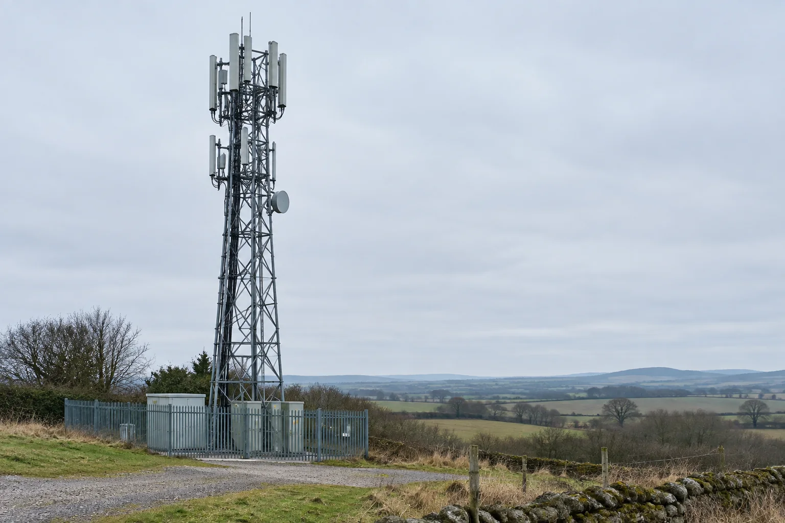
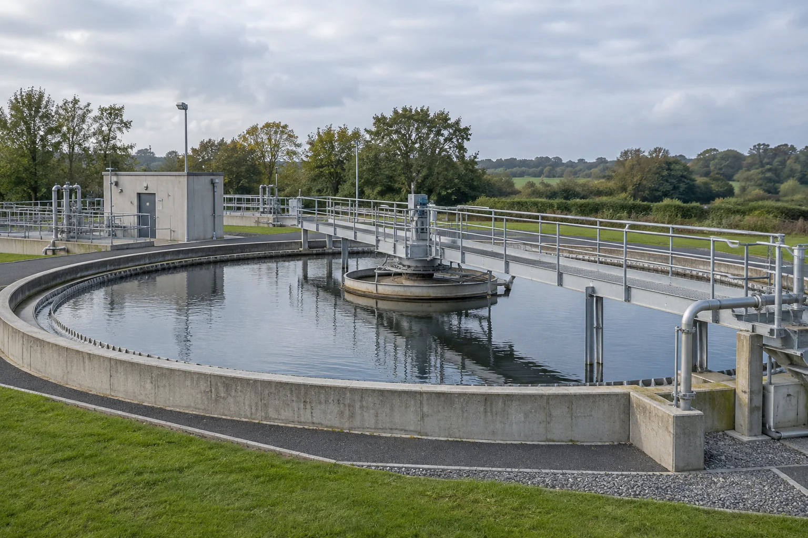
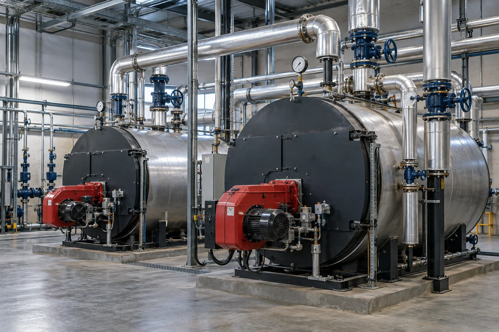
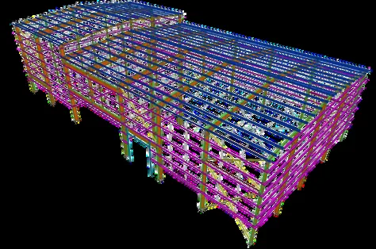
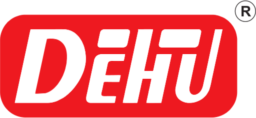

Grandspan Engineering & Projects Limited · London
Global Engineering. Integrated Projects.
UK-based EPC delivery for telecom and water infrastructure, backed by the engineering design teams and certified manufacturing plants of Tenaro Global EPC and the Dehu Group.

Figures relate to the wider Tenaro Global EPC and Dehu Group ecosystem that Grandspan works with.
Industries & capabilities
Infrastructure we deliver. Industry we support.
Grandspan leads telecom and water EPC scopes from London. For power, steam and process work, we bring in the design and manufacturing depth of our wider ecosystem.

Grandspan EPCTelecom Infrastructure
Lattice towers, monopoles, guyed masts and rooftop structures, designed to BS EN 1993-3-1 for UK sites and delivered through to as-built handover.

Grandspan EPCWater & Wastewater
Intakes, pumping stations, reservoirs, elevated storage tanks and treatment structures.
 Ecosystem
EcosystemPower Generation
Boiler and power-plant EPC, pressure parts and spares.

EcosystemHeating & Steam
Package and cogeneration boilers, economisers and heat-recovery equipment.
 Ecosystem
EcosystemProcess & Structures
Industrial structures, BIM, Tekla detailing, port, marine and solar design.
Our approach
From requirement to handover.
Engineering, procurement, fabrication and construction support, organised around a clearly defined scope.
Design responsibilities, applicable codes, inspection requirements and acceptance criteria are agreed at the start of each assignment. Engineering teams work to Eurocode, BS, ACI, AISC, CISC, CSA and IS standards, so drawings and calculations fit the market where the asset is built.
See how we manage procurement, quality and logistics →

A connected ecosystem
One point of contact in London. A full supply chain behind it.
You deal with Grandspan in the UK. Behind us are Tenaro's engineering teams and the Dehu Group's certified fabrication plants.

Dehu Group
A diversified industrial group spanning heavy manufacturing, EPC, O&M, consultancy and logistics.
Tenaro Global EPC
Multidisciplinary design, detailing and project engineering from its head office in Pune, India.
Grandspan Engineering & Projects
London-based project coordination, client interface and telecom and water EPC delivery.
Credentials
Certified to build pressure equipment.
The group holds ASME and IBR authorisations, BS EN 1090 certification for structural steel, and ISO quality, environmental and safety certifications.
Certifications and design experience are held by collaborating group companies, not by Grandspan. About our company status.
ASME, IBR and ISO certifications are held by Dehu Engineering (India) Private Limited, the sister company of Tenaro Global EPC Private Limited. BS EN 1090 certification is held within the group. For supply to Great Britain, see how we handle UK compliance (BS EN 1090 and PE(S)R 2016).
Global network
From India to the world.
Grandspan is an independent UK company working with an international network of collaborating companies in Germany, Singapore, Australia, Kenya and Ghana.
There is a joint venture agreed in Guatemala, and new offices planned in the UAE, the USA, Canada and Brazil.